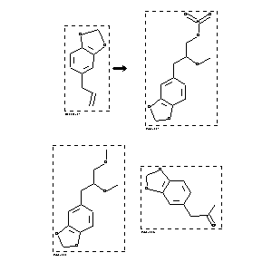

|  |
| FA | RX(1); FLST(1); RX(1) |
Reaction (1 of 1)
| Reaction ID | 1767868 |
| Reactant BRN | 136380 |
| Reactant | 5-allyl-benzo[1,3]dioxole |
| Product BRN | 5078664; 5022958; 164033 |
| Product | 5-(2-methoxy-3-nitrooxy-propyl)-benzo[1,3]dioxole; 5-(2,3-dimethoxy-propyl)-benzo[1,3]dioxole; benzo[1,3]dioxol-5-yl-propan-2-one |
| No. of Reaction Details | 1 |
Reaction Details (1 of 1)
| Reaction Classification | Preparation |
| Yield | 10 percent (BRN=164033); 30 percent (BRN=5078664); 38 percent (BRN=5022958) |
| Reagent | thallium(III) nitrate trihydrate |
| Solvent | methanol |
| Citation Pointer | 5617635; Journal; Niwa, Masatake; Noda, Hitoshi; Kobayashi, Hiroki; Yamamura, Shosuke; CMLTAG; Chem.Lett.; EN; 1980; 85-88; |
Reference (1 of 1)
| Citation Number | 5617635 |
| Document Type | Journal |
| Authors | Niwa, Masatake; Noda, Hitoshi; Kobayashi, Hiroki; Yamamura, Shosuke |
| CODEN | CMLTAG |
| Journal Title | Chem.Lett. |
| Language Code | EN |
| Publication Year | 1980 |
| Page | 85-88 |